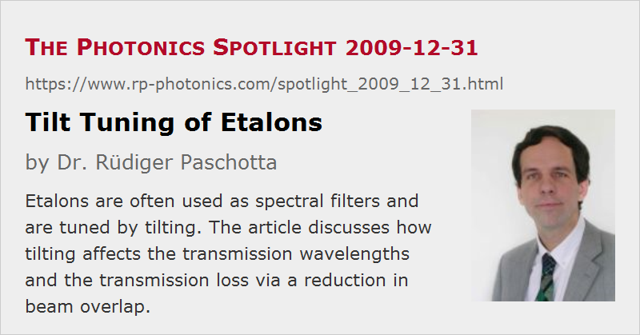

Tilt Tuning of Etalons
Posted on 2009-12-31 as a part of the Photonics Spotlight (available as e-mail newsletter!)
Permanent link: https://www.rp-photonics.com/spotlight_2009_12_31.html
Author: Dr. Rüdiger Paschotta, RP Photonics Consulting GmbH
Abstract: Etalons are often used as spectral filters and are tuned by tilting. The article discusses how tilting affects the transmission wavelengths and the transmission loss via a reduction in beam overlap.

Ref.: encyclopedia articles on etalons

Let us consider a solid etalon, consisting of a transparent plate of a material like fused silica, for example, with flat and well polished surfaces. These surface can have reflecting dielectric coatings for increasing the finesse. Maximum transmission (near unity) is only possible for wavelengths where the etalon is resonant, i.e., the round-trip phase shift is an integer multiple of 2π. Such resonances occur at approximately equally spaced frequencies with a spacing which is called the free spectral range. The transmission bandwidth is the free spectral range divided by the finesse, with the latter being determined by the surface reflectivities (at least in the simplest cases).
In Which Direction Do the Transmission Peaks Move?
It is a common method to tune such an etalon to a certain transmission wavelength by tilting it. A first interesting question is whether an increasing tilt angle increases or decreases the wavelengths of the transmission peaks. A seemingly plausible but wrong argument is that tilting makes the beam path longer, and that this must be compensated by a longer wavelength. In reality, however, the round-trip phase change is decreased rather than increased! A somewhat formal (but correct) argument for this is that the projection of the k vector to the direction perpendicular to the surfaces is reduced. But what is wrong about the previous argument? This is explained in The Photonics Spotlight 2006-11-02. The correct conclusion is then that the transmission peaks move to shorter wavelengths when the tilt angle is increased. See Figure 2 for a calculated example case.
The Overlap Issue
Another issue is that tilting causes a transverse offset of the circulating beam after each round trip. Obviously, this can affect the interference conditions and thus the etalon's performance. In an extreme case, where the etalon is quite thick, the tilt angle is large and the beam radius is small, there is no overlap at all, so we have no interference, and the etalon will not function as a wavelength filter. On the other hand, the transverse offset may be negligible when the etalon is thin, the angle is small, and the incident beam is large. But where does tilting begin to cause a problem? The answer to that question is often essential when applying etalons, e.g., for wavelength tuning of lasers.
A customer of mine recently directed my attention to claims of an etalon manufacturer, where they use a simple rule for calculating the resulting loss. They take the finesse as the effective number of round trips and calculate the total transverse beam offset within these round trips. Then they divide this total offset by the beam radius, and claim that the result is the fraction of the power which is lost due to the tilt effect: the maximum transmission is reduced by that amount.
Well, I didn't believe that this is true, and thus made my own calculation. The right way of doing this: take the electric field distribution of the incident beam and calculate the field distributions after multiple round trips, where the total power is reduced depending on the surface reflectivities, and the transverse offset increases with each round trip, depending on the thickness and the tilt angle. By adding up all reflected field components, one obtains the total electric field reflected by the device, for example for a wavelength where the device is resonant. Without any tilt, the first reflection is exactly canceled by the sum of all other reflected components, resulting in zero reflection and thus total transmission. (I assume the ideal case where both surfaces have the same reflectivity, the mirror coatings have no absorption and scattering losses, the surface quality and parallelism is perfect, etc.) With some finite tilt, this is no longer true due to the transverse beam offset.
Figure 3 shows results for an example case. For small tilt angles (few degrees), the transmission losses are much smaller than those calculated with the crude technique explained above. For example, we obtain ≈ 0.33% loss for a tilt of 5°, whereas the crude method predicts nearly 18%! For increasing tilt angles, however, the losses increase more than in proportion to the tilt angle, so that eventually they can get significant.
It may be surprising that the crude estimate is so far off. However, consider the example case with numbers as used for Figure 3 and a tilt angle of 5°. The finesse is ≈6, and within 6 round trips there is a total transverse offset of 36 μm, which is 18% of the 200-μm beam radius. However, within 6 round trips the optical field amplitude is reduced to only 4.7% of the initial amplitude. Therefore, it doesn't matter so much if there is some transverse offset by then.
This article is a posting of the Photonics Spotlight, authored by Dr. Rüdiger Paschotta. You may link to this page and cite it, because its location is permanent. See also the RP Photonics Encyclopedia.
Note that you can also receive the articles in the form of a newsletter or with an RSS feed.
Questions and Comments from Users
Here you can submit questions and comments. As far as they get accepted by the author, they will appear above this paragraph together with the author’s answer. The author will decide on acceptance based on certain criteria. Essentially, the issue must be of sufficiently broad interest.
Please do not enter personal data here; we would otherwise delete it soon. (See also our privacy declaration.) If you wish to receive personal feedback or consultancy from the author, please contact him e.g. via e-mail.
By submitting the information, you give your consent to the potential publication of your inputs on our website according to our rules. (If you later retract your consent, we will delete those inputs.) As your inputs are first reviewed by the author, they may be published with some delay.
|  |
If you like this page, please share the link with your friends and colleagues, e.g. via social media:
These sharing buttons are implemented in a privacy-friendly way!